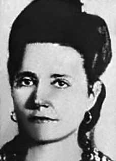

Angelina
Gonçalves
CIRCUNSTÂNCIAS DA MORTE
Angelina Gonçalves morreu no dia 1º de maio de 1950, com um tiro na cabeça disparado pela polícia, ao participar de manifestação pública pelas comemorações do Dia do Trabalhador em Rio Grande (RS).
De acordo com trabalho publicado de Mario Augusto Correia San Segundo, no dia 1º de maio de 1950, foi realizado um churrasco em comemoração à data no Parque Rio-Grandense, ao final da Linha do Parque. A atividade fora organizada por militantes do movimento operário gaúcho, especialmente aqueles filiados ao PCB. Ao término do evento, os presentes decidiram marchar até a sede da Sociedade União Operária (SUO), para reivindicar a sua reabertura. A marcha saiu ao som de uma banda, com palavras de ordem e apresentação de faixas e cartazes.
Próximo ao campo do Esporte Clube General Osório, a manifestação foi interceptada pelo delegado da Delegacia de Ordem Política e Social (DELOPS) Ewaldo Miranda, que exigiu a dispersão. Miranda estava acompanhado de policiais e soldados da Brigada Militar, que antes estavam dentro do estádio realizando a segurança. A partir da intercepção dos agentes do DELOPS, foram relatadas duas versões para os acontecimentos. O jornal Rio Grande, de 3 de maio de 1950, apresenta a versão oficial do conflito, afirmando que o tiroteio teve início a partir da radicalização dos manifestantes, que se recusaram a dispersar e acabar com a passeata.
O delegado Miranda teria se reportado diretamente à liderança da manifestação para tentar por fim ao ato. A reação agitou os manifestantes, o que acabou resultando em um cenário de agressões físicas. Ewaldo Miranda sacou um revólver e, assim, o tiroteio começou. Segundo essa versão dos acontecimentos, os policiais estariam com as armas guardadas, sendo que o início do tiroteio que desembocou na morte de manifestantes teria sido obra dos militantes. Os três manifestantes eram o pedreiro Euclides Pinto, o portuário Honório Alves de Couto e a tecelã Angelina Gonçalves.
Também foi morto o ferroviário Osvaldino Correa, que havia saído do estádio para se incorporar à manifestação. Várias pessoas ficaram feridas, policiais e manifestantes. No entanto, muitos ativistas preferiram não buscar ajuda hospitalar com medo de serem identificados e fichados pela polícia. Por sua vez, na versão contada pelo jornal do PCB Voz Operária, o conflito é descrito como “armadilha premeditada” da polícia, que teria chegado à manifestação com a intenção de dispersá-la, atirando nos manifestantes. Segundo o jornal: “Quando a passeata havia percorrido cerca de 1km, surgiram de várias ruas, onde estavam emboscados, caminhões de policiais da Ordem Política e Social e grupos montados da Brigada Militar. De armas em punho, aos gritos de ‘nem mais um passo’, os beleguins abriram fogo contra a multidão desarmada (…). Os trabalhadores reagiram (…) à emboscada covarde e sangrenta. Homens e mulheres enfrentaram os bandidos armados, tomando-lhes as armas e esmurrando-os, atracando-se com eles, numa luta corpo a corpo.”
Um policial teria arrancado a bandeira nacional que algumas mulheres traziam à frente da passeata e Angelina foi até lá e a tomou de volta. Ao retornar para junto dos manifestantes, a militante foi atingida por um tiro na nuca, atrás da orelha esquerda. O tiro provocou “fratura da base do crânio, com desorganização da substância nervosa”, como relata a certidão de óbito. Há ainda outra versão que aponta que, quando morreu, Angelina estava com a bandeira nacional em uma mão e a filha Shirley, com menos de dez anos de idade, na outra.
Esse 1º de maio em Rio Grande teve repercussões em muitas outras cidades do Brasil, e ficou conhecido como “o dia em que mataram a operária” e “o 1º de Maio sangrento”.
Angelina Gonçalves died on May 1, 1950, from a shot in the head by the police, while participating in a public demonstration to celebrate Labor Day in Rio Grande (RS).
According to a published work by Mario Augusto Correia San Segundo, on May 1, 1950, a barbecue was held to commemorate the date in Parque Rio-Grandense, at the end of the Park Line. The activity was organized by activists of the Rio Grande do Sul labor movement, especially those affiliated with the PCB. At the end of the event, those present decided to march to the headquarters of the Sociedade União Operária (SUO), to demand its reopening. The march took place to the sound of a band, with slogans and the presentation of banners and posters.
Close to the Esporte Clube General Osório field, the demonstration was intercepted by the delegate of the Political and Social Order Police Station (DELOPS) Ewaldo Miranda, who demanded dispersion. Miranda was accompanied by police officers and soldiers from the Military Brigade, who were previously inside the stadium providing security. Following the interception of DELOPS agents, two versions of the events were reported. The Rio Grande newspaper, dated May 3, 1950, presents the official version of the conflict, stating that the shooting began as a result of the radicalization of the protesters, who refused to disperse and end the march.
Delegate Miranda would have reported directly to the leadership of the demonstration to try to put an end to the act. The reaction agitated the protesters, which ended up resulting in a scenario of physical attacks. Ewaldo Miranda pulled out a revolver and the shooting began. According to this version of events, the police had their weapons stored, and the start of the shooting that resulted in the death of protesters would have been the work of the militants. The three protesters were bricklayer Euclides Pinto, port worker Honório Alves de Couto and weaver Angelina Gonçalves.
Railway worker Osvaldino Correa, who had left the stadium to join the demonstration, was also killed. Several people were injured, both police officers and protesters. However, many activists preferred not to seek hospital help for fear of being identified and booked by the police. In turn, in the version told by the PCB newspaper Voz Operária, the conflict is described as a “premeditated trap” by the police, who arrived at the demonstration with the intention of dispersing it, shooting at the protesters. According to the newspaper: "When the march had covered about 1km, trucks of police officers from the Political and Social Order and mounted groups from the Military Brigade appeared from several streets, where they were ambushed. With weapons in hand, shouting 'not one more step', the bailiffs opened fire on the unarmed crowd (…). The workers reacted (…) to the cowardly and bloody ambush. Men and women faced the armed bandits, taking their weapons and punching them, grappling with them, in a hand-to-hand fight.”
A police officer allegedly tore down the national flag that some women were carrying at the front of the march and Angelina went there and took it back. Upon returning to the protesters, the activist was shot in the back of the head, behind her left ear. The shot caused a “fracture of the base of the skull, with disorganization of the nervous substance”, as stated in the death certificate. There is also another version that points out that, when she died, Angelina had the national flag in one hand and her daughter Shirley, less than ten years old, in the other.
This May 1st in Rio Grande had repercussions in many other cities in Brazil, and became known as “the day they killed the worker” and “the bloody 1st of May”.
Angelina Gonçalves murió el 1 de mayo de 1950, de un disparo en la cabeza propinado por la policía, mientras participaba en una manifestación pública para celebrar el Día del Trabajo en Rio Grande (RS).
Según una obra publicada por Mario Augusto Correia San Segundo, el 1 de mayo de 1950 se realizó un asado para conmemorar la fecha en el Parque Rio-Grandense, al final de la Línea Parque. La actividad fue organizada por activistas del movimiento obrero de Rio Grande do Sul, especialmente afiliados al PCB. Al final del evento, los presentes decidieron marchar hasta la sede de la Sociedade União Operária (SUO), para exigir su reapertura. La marcha se desarrolló al son de una banda, con consignas y la presentación de pancartas y carteles.
Cerca del campo del Deporte Clube General Osório, la manifestación fue interceptada por el delegado de la Comisaría de Orden Político y Social (DELOPS), Ewaldo Miranda, que exigió la dispersión. Miranda estuvo acompañada de policías y militares de la Brigada Militar, quienes previamente se encontraban dentro del estadio brindando seguridad. Tras la interceptación de los agentes del DELOPS, se reportaron dos versiones de los hechos. El diario Río Grande, del 3 de mayo de 1950, presenta la versión oficial del conflicto, afirmando que los disparos se iniciaron a raíz de la radicalización de los manifestantes, quienes se negaron a dispersarse y poner fin a la marcha.
El delegado Miranda se habría reportado directamente a la dirección de la manifestación para intentar poner fin al acto. La reacción agitó a los manifestantes, lo que terminó derivando en un escenario de agresiones físicas. Ewaldo Miranda sacó un revólver y comenzó el tiroteo. Según esta versión de los hechos, los policías tenían guardadas sus armas, y el inicio del tiroteo que resultó en la muerte de los manifestantes habría sido obra de los militantes. Los tres manifestantes eran el albañil Euclides Pinto, el trabajador portuario Honório Alves de Couto y la tejedora Angelina Gonçalves.
También fue asesinado el trabajador ferroviario Osvaldino Correa, que había salido del estadio para sumarse a la manifestación. Varias personas resultaron heridas, tanto policías como manifestantes. Sin embargo, muchos activistas prefirieron no buscar ayuda hospitalaria por miedo a ser identificados y fichados por la policía. A su vez, en la versión contada por el diario Voz Operária del PCB, el conflicto es calificado como una “trampa premeditada” por parte de la policía, que llegó a la manifestación con la intención de dispersarla, disparando contra los manifestantes. Según el diario: "Cuando la marcha había recorrido cerca de 1 kilómetro, camiones de policías del Orden Político y Social y grupos montados de la Brigada Militar aparecieron desde varias calles, donde fueron emboscados. Armas en mano, al grito de 'ni un paso más', los alguaciles abrieron fuego contra la multitud desarmada (…). Los trabajadores reaccionaron (…) ante la cobarde y sangrienta emboscada. Hombres y mujeres se enfrentaron a los bandidos armados, tomando sus armas y golpeándolos, forcejeando con ellos, en una lucha cuerpo a cuerpo”.
Un policía supuestamente arrancó la bandera nacional que portaban algunas mujeres al frente de la marcha y Angelina fue allí y la recuperó. Al regresar con los manifestantes, la activista recibió un disparo en la nuca, detrás de la oreja izquierda. El disparo le provocó una “fractura de la base del cráneo, con desorganización de la sustancia nerviosa”, según consta en el certificado de defunción. También hay otra versión que señala que, cuando murió, Angelina tenía la bandera nacional en una mano y su hija Shirley, de menos de diez años, en la otra.
Este 1 de mayo en Río Grande tuvo repercusiones en muchas otras ciudades de Brasil, y pasó a ser conocido como “el día que mataron al trabajador” y “el 1 de mayo sangriento”.